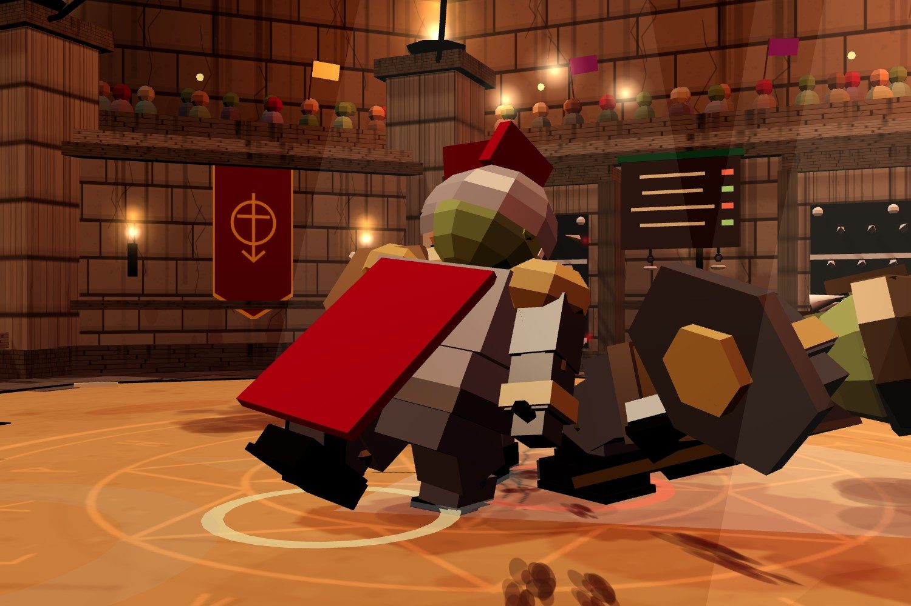
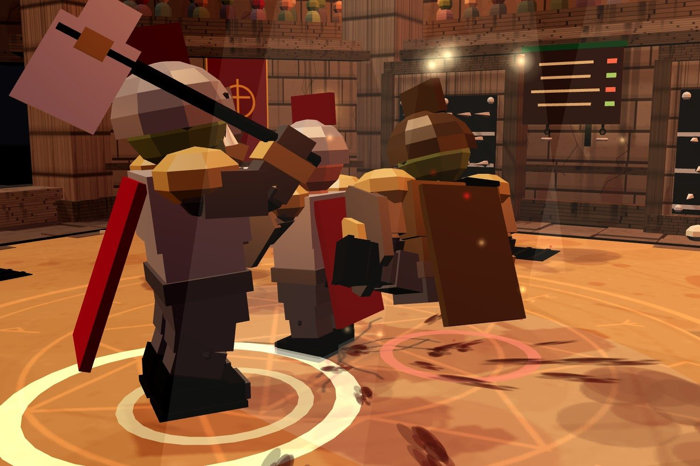
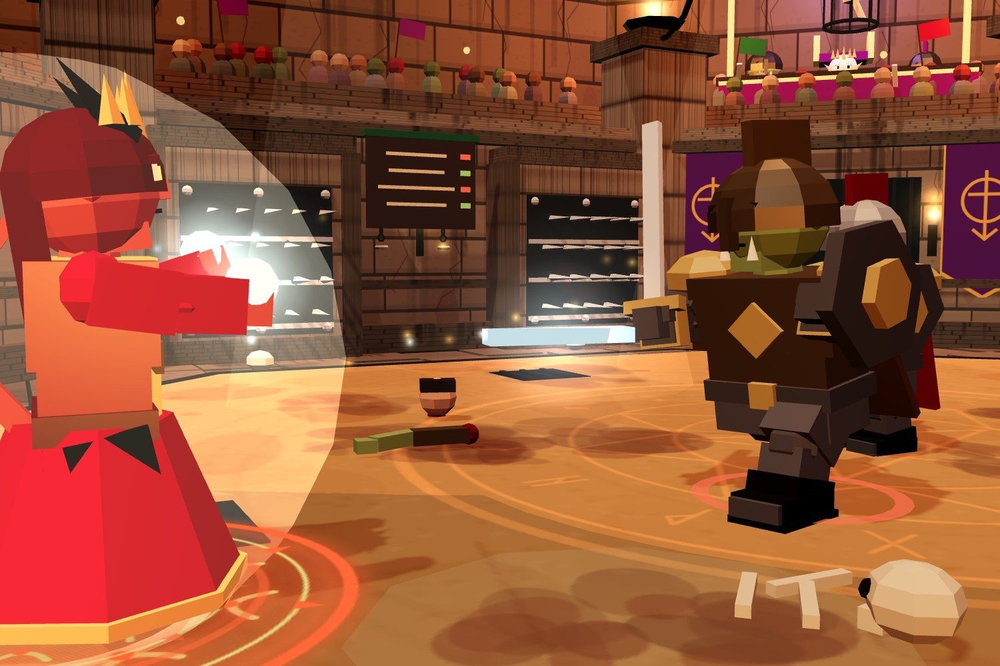
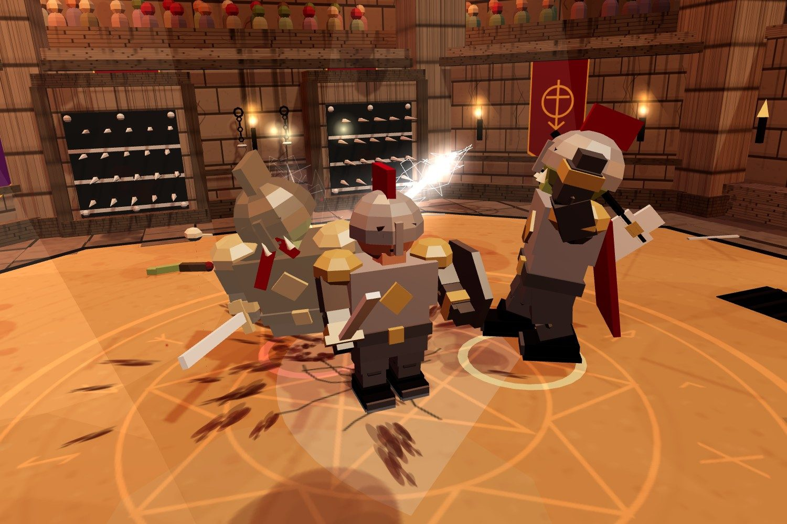
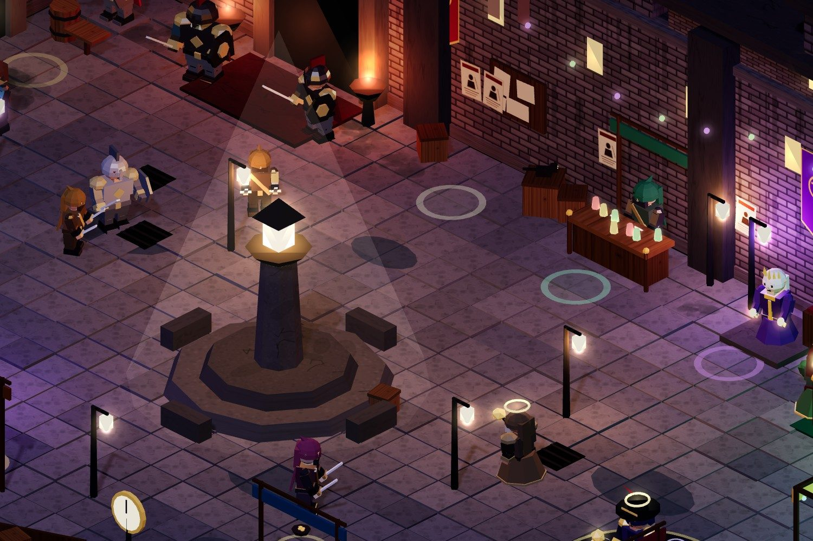
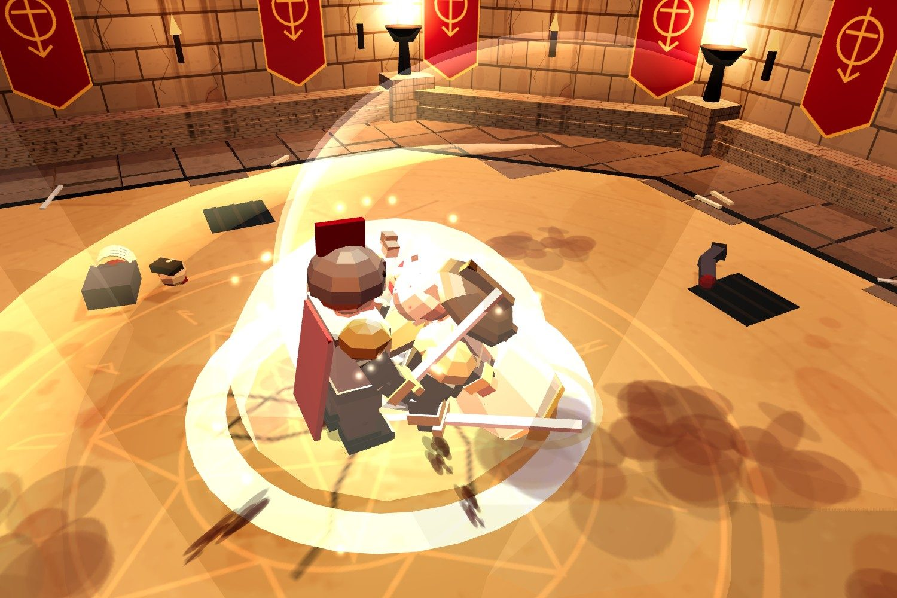

<title>Guttercrown Sell Sheet</title>
<meta name="claude:viewport-fit-sides" content="cover">
<link rel="preconnect" href="https://fonts.googleapis.com">
<link rel="stylesheet" href="https://fonts.googleapis.com/css2?family=Cinzel:wght@500;700;900&family=Crimson+Pro:ital,wght@0,400;0,600;1,400&family=Grenze+Gotisch:wght@700;900&display=swap">
<style>
/* Layout: one sheet, read top to bottom. A full-bleed pit shot carries the title, then the pitch,
   the numbers, three reasons it sells, the frames, and the facts. Same palette as the game's own menus. */
:root {
  color-scheme: dark;
  --pit: #120e12;          /* page: the dark above the pit */
  --stone: #1d1720;        /* raised panels, the game's stone */
  --line: #3a2f2a;         /* rules and borders */
  --parch: #e7dbbd;        /* body text, parchment */
  --parch-dim: #b9a986;    /* secondary text */
  --gold: #e0b04a;         /* the crown */
  --bronze: #8a6a34;       /* frames */
  --blood: #b3261e;        /* the one loud colour */
  --title: 'Grenze Gotisch', 'Cinzel', Georgia, serif;
  --caps: 'Cinzel', Georgia, serif;
  --body: 'Crimson Pro', Georgia, 'Times New Roman', serif;
}
* { box-sizing: border-box; }
body { background: var(--pit); color: var(--parch); font-family: var(--body); font-size: 19px; line-height: 1.5; }
.wrap { max-width: 1080px; margin: 0 auto; padding-left: max(16px, env(safe-area-inset-left, 0px)); padding-right: max(16px, env(safe-area-inset-right, 0px)); }
img { display: block; max-width: 100%; height: auto; }
h1, h2, h3 { margin: 0; text-wrap: balance; }
p { margin: 0; }

/* hero */
.hero { position: relative; overflow: hidden; border-bottom: 2px solid var(--bronze); }
.hero img { width: 100%; aspect-ratio: 3 / 2; max-height: 640px; object-fit: cover; object-position: 50% 40%; }
.hero::after { content: ""; position: absolute; inset: 0; background: linear-gradient(180deg, rgba(18,14,18,.75) 0%, rgba(18,14,18,0) 34%, rgba(18,14,18,0) 55%, rgba(18,14,18,.92) 100%); pointer-events: none; }
.hero-text { position: absolute; inset: auto 0 0 0; z-index: 1; padding-block: 0 28px; }
.presents { font-family: var(--caps); font-size: 13px; letter-spacing: .32em; text-transform: uppercase; color: var(--parch-dim); }
.logo { font-family: var(--title); font-weight: 900; font-size: clamp(56px, 11vw, 124px); line-height: .9; letter-spacing: .01em;
  background: linear-gradient(180deg, #fff1c2 0%, var(--gold) 45%, #8a5a1c 100%); -webkit-background-clip: text; background-clip: text; color: transparent;
  filter: drop-shadow(0 3px 0 rgba(0,0,0,.7)) drop-shadow(0 0 22px rgba(0,0,0,.6)); }
.logo span { background: linear-gradient(180deg, #ff9a7a 0%, var(--blood) 55%, #5a0f0b 100%); -webkit-background-clip: text; background-clip: text; }
.ribbon { display: inline-block; margin-top: 10px; background: var(--blood); color: #f7e7c4; font-family: var(--caps); font-weight: 700; font-size: 14px; letter-spacing: .22em; text-transform: uppercase; padding: 6px 16px; clip-path: polygon(0 0, 100% 0, 97% 50%, 100% 100%, 0 100%, 3% 50%); }

/* pitch */
.pitch { padding-block: 44px 8px; display: grid; grid-template-columns: 1.35fr 1fr; gap: 40px; align-items: start; }
.pitch > * { min-width: 0; }
.logline { font-size: 27px; line-height: 1.3; color: #fff4dc; }
.logline em { color: var(--gold); font-style: normal; }
.pitch .more { margin-top: 16px; color: var(--parch-dim); max-width: 62ch; }
.quote { border-left: 3px solid var(--blood); padding-left: 18px; font-style: italic; font-size: 21px; color: var(--parch); }
.quote cite { display: block; margin-top: 10px; font-style: normal; font-family: var(--caps); font-size: 12px; letter-spacing: .18em; text-transform: uppercase; color: var(--parch-dim); }

/* numbers: these are the real counts from the build */
.ledger { margin-block: 40px; border-top: 1px solid var(--line); border-bottom: 1px solid var(--line); display: grid; grid-template-columns: repeat(6, 1fr); }
.ledger div { padding: 18px 10px; text-align: center; border-left: 1px solid var(--line); }
.ledger div:first-child { border-left: 0; }
.ledger b { display: block; font-family: var(--title); font-size: 46px; line-height: 1; color: var(--gold); font-variant-numeric: tabular-nums; }
.ledger span { display: block; margin-top: 6px; font-family: var(--caps); font-size: 11.5px; letter-spacing: .14em; text-transform: uppercase; color: var(--parch-dim); }

/* three reasons */
.eyebrow { font-family: var(--caps); font-size: 13px; letter-spacing: .28em; text-transform: uppercase; color: var(--blood); margin-bottom: 8px; }
h2 { font-family: var(--title); font-weight: 700; font-size: 40px; line-height: 1.05; color: #fff1d0; }
.why { display: grid; grid-template-columns: repeat(3, 1fr); gap: 28px; margin-top: 22px; }
.why > div { min-width: 0; }
.why h3 { font-family: var(--caps); font-size: 18px; font-weight: 700; color: var(--gold); letter-spacing: .04em; margin-bottom: 8px; }
.why p { color: var(--parch); font-size: 18px; }

/* frames */
.frames { margin-top: 46px; display: grid; grid-template-columns: 1.5fr 1fr; grid-template-rows: auto auto; gap: 10px; }
.frames figure { margin: 0; position: relative; border: 1px solid var(--bronze); overflow: hidden; background: var(--stone); }
.frames figure:first-child { grid-row: span 2; }
.frames img { width: 100%; height: 100%; object-fit: cover; }
.frames figcaption { position: absolute; left: 0; right: 0; bottom: 0; padding: 22px 12px 8px; background: linear-gradient(transparent, rgba(10,8,10,.88)); font-size: 15px; color: var(--parch); }
.frames2 { margin-top: 10px; display: grid; grid-template-columns: repeat(3, 1fr); gap: 10px; }
.frames2 figure { margin: 0; position: relative; border: 1px solid var(--bronze); overflow: hidden; }
.frames2 img { aspect-ratio: 3 / 2; object-fit: cover; width: 100%; }
.frames2 figcaption { position: absolute; left: 0; right: 0; bottom: 0; padding: 22px 10px 7px; background: linear-gradient(transparent, rgba(10,8,10,.88)); font-size: 14.5px; }

/* facts */
.facts { margin-block: 48px 40px; display: grid; grid-template-columns: 1fr 1fr; gap: 36px; }
.facts > * { min-width: 0; }
dl { margin: 0; display: grid; grid-template-columns: max-content 1fr; gap: 8px 18px; }
dt { font-family: var(--caps); font-size: 12.5px; letter-spacing: .14em; text-transform: uppercase; color: var(--parch-dim); padding-top: 4px; }
dd { margin: 0; }
.audience li { margin-bottom: 6px; }
.audience ul { margin: 10px 0 0; padding-left: 20px; }
.play { display: inline-block; margin-top: 20px; font-family: var(--caps); font-weight: 700; letter-spacing: .16em; text-transform: uppercase; font-size: 14px; color: #1a1208; background: linear-gradient(#f4cf72, var(--gold) 55%, #a87a2a); padding: 12px 22px; border: 1px solid #5a3e12; text-decoration: none; box-shadow: 0 2px 0 #000; }
.url { margin-top: 10px; font-size: 15px; color: var(--parch-dim); overflow-wrap: anywhere; }
.url span { color: var(--parch); user-select: all; }
.hero .play { margin-top: 16px; }
.tip { margin-top: 10px; font-size: 15px; color: var(--parch); text-shadow: 0 1px 4px #000; }
.play:focus-visible { outline: 2px solid #fff1c2; outline-offset: 3px; }
footer { border-top: 1px solid var(--line); padding-block: 18px 30px; font-family: var(--caps); font-size: 12px; letter-spacing: .14em; text-transform: uppercase; color: var(--parch-dim); display: flex; flex-wrap: wrap; gap: 8px 24px; justify-content: space-between; }

@media (max-width: 820px) {
  .pitch, .facts { grid-template-columns: 1fr; gap: 26px; }
  .why { grid-template-columns: 1fr; gap: 20px; }
  .ledger { grid-template-columns: repeat(3, 1fr); }
  .ledger div:nth-child(4) { border-left: 0; }
  .ledger div:nth-child(n+4) { border-top: 1px solid var(--line); }
  .frames { grid-template-columns: 1fr; }
  .frames figure:first-child { grid-row: auto; }
  .frames2 { grid-template-columns: 1fr; }
  .hero img { aspect-ratio: 4 / 5; }
  .logline { font-size: 23px; }
  h2 { font-size: 32px; }
}
</style>

<header class="hero">
  
  <div class="hero-text"><div class="wrap">
    <div class="presents">The Deep Guild presents</div>
    <h1 class="logo">Gutter<span>crown</span></h1>
    <div class="ribbon">Pit-fighters of the Undercity</div>
    <div><a class="play" href="https://claude.ai/artifact/6jAxeQpoBi67Qr8hWHKBqa" target="_blank" rel="noopener">Play it now, free in your browser</a></div>
    <p class="tip">On a phone, add it to your Home Screen as an app for the best performance.</p>
  </div></div>
</header>

<main class="wrap">
  <section class="pitch">
    <div>
      <p class="logline">A one-on-one pit fighter where you <em>build a fighter from the dice up</em>, bleed for coin under a city that owns your debt, and climb nine gates to take a brass crown from the woman who has worn it for seven years.</p>
      <p class="more">Real-time fights decided by timing, not mashing. Six classes and six peoples, rolled on real dice. Every bout ends in a finisher the sand remembers, and between bouts you live in the Lamp Market: betting with a bookie, buying blades at the Fence, and deciding what to sign.</p>
    </div>
    <blockquote class="quote">The Deep Guild writes every debt in the Blood Ledger, and beside it every name the pit has finished. The Guild always collects.<cite>The opening film</cite></blockquote>
  </section>

  <div class="ledger" role="list">
    <div role="listitem"><b>116</b><span>ways a bout can end</span></div>
    <div role="listitem"><b>31</b><span>weapons, each with a temper</span></div>
    <div role="listitem"><b>6</b><span>classes</span></div>
    <div role="listitem"><b>6</b><span>peoples</span></div>
    <div role="listitem"><b>9</b><span>gates to the crown</span></div>
    <div role="listitem"><b>4</b><span>endings</span></div>
  </div>

  <section>
    <div class="eyebrow">Why it sells</div>
    <h2>Every fight ends in a story. Most end in pieces.</h2>
    <div class="why">
      <div><h3>Finishers people clip</h3><p>Fifty-nine class finishers, a pair for every weapon family, endings chosen by how the bout went, and random gifts from the crowd. Arms, hands, legs and heads come off, and the blood paints the sand where it fell.</p></div>
      <div><h3>A build in every bout</h3><p>Pick a class and a people, a weapon with its own temper, a stance, an edge that fills as you fight and pays out all at once. Two fighters of the same class can play nothing alike.</p></div>
      <div><h3>A city that owes you</h3><p>The Lamp Market answers your career: a bookie who borrows from you, a guild that lends you a door, an oracle under the stalls who sells you yesterday. Sign with him or refuse, and the ending changes.</p></div>
    </div>
  </section>

  <div class="frames">
    <figure><figcaption>Three-blow combos, with a third blow of each weapon’s own.</figcaption></figure>
    <figure><figcaption>Casters float, ward and fire on a rhythm.</figcaption></figure>
    <figure><figcaption>The finisher. The sand keeps the stain.</figcaption></figure>
  </div>
  <div class="frames2">
    <figure><figcaption>The Lamp Market, between bouts.</figcaption></figure>
    <figure><figcaption>Rogues read the opening and take it.</figcaption></figure>
    <figure><figcaption>Clerics bring the light down on you.</figcaption></figure>
  </div>

  <section class="facts">
    <div>
      <div class="eyebrow">The facts</div>
      <dl>
        <dt>Genre</dt><dd>Isometric 3D action fighter with a role-playing career</dd>
        <dt>Players</dt><dd>One</dd>
        <dt>Plays on</dt><dd>Desktop browser, phone (touch) and controller, one build for all three</dd>
        <dt>Session</dt><dd>A bout is about a minute; a career runs 35 to 45 bouts</dd>
        <dt>Audience</dt><dd>Adults: strong blood and gore, gambling, debt (not yet rated)</dd>
        <dt>Stage</dt><dd>Playable vertical slice, start to crown to ending</dd>
        <dt>Studio</dt><dd>North Coast Studios with E Concepts</dd>
      </dl>
    </div>
    <div class="audience">
      <div class="eyebrow">Who it is for</div>
      <p>Players who like a fight with weight to it and a reason to come back.</p>
      <ul>
        <li>Fans of brutal, cinematic finishers who share their best ones.</li>
        <li>Build-crafters who want dice, classes and gear that matter in real time.</li>
        <li>Players who want a career they can finish in a week of evenings on a phone.</li>
      </ul>
      <a class="play" href="https://claude.ai/artifact/6jAxeQpoBi67Qr8hWHKBqa" target="_blank" rel="noopener">Play the latest build</a>
      <p class="url">Desktop, phone or controller: <span>claude.ai/artifact/6jAxeQpoBi67Qr8hWHKBqa</span></p>
      <p class="url">On a phone, add it to your Home Screen as an app for the best performance.</p>
    </div>
  </section>
</main>

<footer class="wrap">
  <span>Guttercrown · North Coast Studios × E Concepts</span>
  <span>Frames are captured from the running game</span>
</footer>
